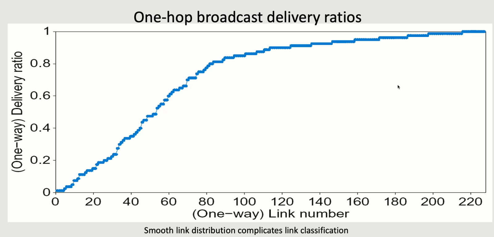
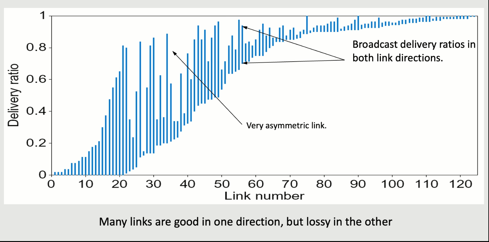
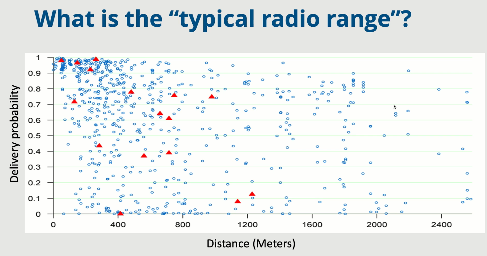

- Makes it hard to just give a threshold to say whether some links are bad or not

- Minimize the total transmissions per packet by looking at delivery ratios
- For a path of multiple links, the total ETX is the sum of all component ETCs
The idea was for an apartment building, you didn't need every apartment to have their own router
You could instead just have wide coverage from just a few nodes on the roof of the apartment building, each of which could serve 10-30 people
So this is an example of a home-esque network that is entirely handled through wireless with no wired backbone
Source routing: rather than use something like BGP or distance-vector, the sources all determine the path the packet is going to take

Link metric: How do we figure out which path to use?